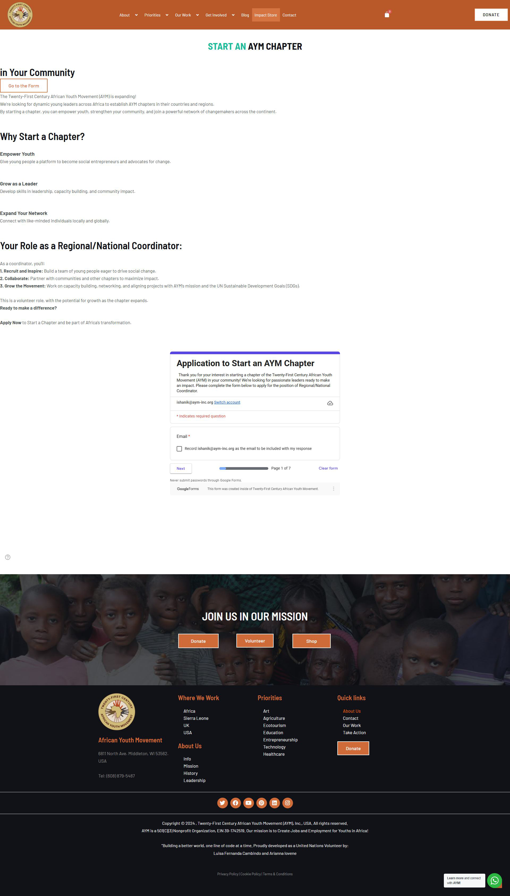
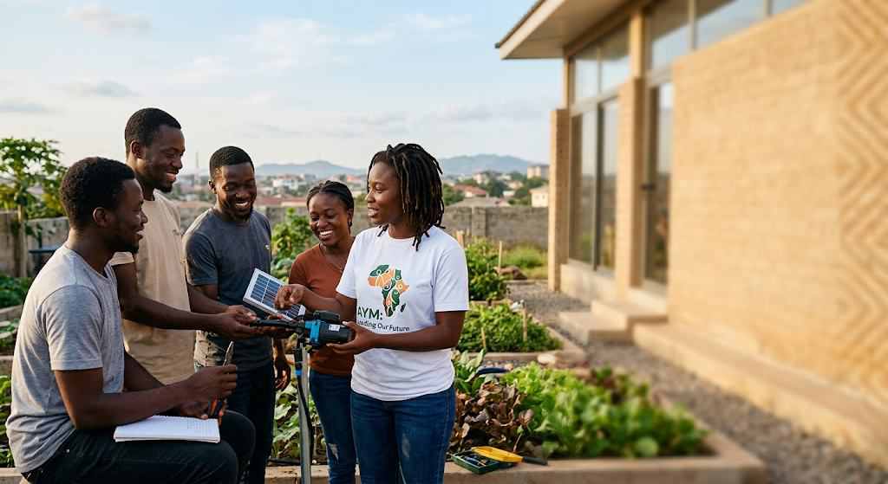

Mobilize Your Community. Lead an AYM Chapter.
Bring the African Youth Movement to your city or country. Gain the backing, global credibility, and fundraising infrastructure you need to launch grassroots initiatives, hire local talent, and build sustainable solutions.
Why Start a Local Chapter?
Global Credibility & Fundraising
Access AYM's established organizational status to apply for international grants and institutional funding.
Turnkey Resource Infrastructure
Set up localized fundraising through integrated PayPal and digital campaign tools.
Centralized Pan-African Network
Combine fundraising power across regional groups for continent-wide impact.
Leadership Development
Connect members to cross-border conferences, leadership training and the African Lecture Series.
How Chapters Drive Impact
Local Grassroots Organizing
Bring people together around the issues that matter in your community.
Resource Mobilization & Grants
Raise funds and apply for grants using AYM's infrastructure.
Creating Sustainable Employment
Hire local talent and build social enterprise models.
Knowledge Sharing
Share lessons across the Pan-African chapter network.
Your role as a coordinator
Recruit and Inspire
Grow a team of passionate young leaders in your area.
Collaborate
Work with the global AYM team and other chapters.
Grow the Movement
Champion AYM's mission locally and across borders.

Active & Emerging Chapter Network
Ghana · Nigeria · Sierra Leone · Senegal
Kenya · Uganda · Rwanda · Tanzania
South Africa · Zambia · Zimbabwe
Resources Provided to Chapter Leaders
Fundraising & Tech Toolkit
Payment integrations, campaign templates and guides.
Legal & Governance Support
Operate under AYM's nonprofit framework with clear compliance guidance.
Program & Event Playbooks
Proven templates for launching programs and local events.
Chapter Onboarding Process
Submit Your Application
Tell us about your community and vision.
Fill Background Check
A screening step to keep our network safe.
Receive Role Acceptance
We confirm your chapter and connect you with mentors.
Start Your First Project
Launch your first local initiative with full support.
Frequently asked questions
Who can start a chapter?
Anyone committed to youth empowerment—individuals or small groups—can apply to start an AYM chapter.
Is there a cost to start a chapter?
No. Chapters are provided with resources, tooling and fundraising support at no cost.
What support do I receive?
A fundraising & tech toolkit, legal and governance support, and program & event playbooks.
How long does onboarding take?
Submit application → background check → acceptance → start your first project.
Do chapters handle their own finances?
Yes, with transparency and compliance oversight from the AYM central team.
Still have questions?
Can't find the answer you're looking for? Please chat to our friendly team.